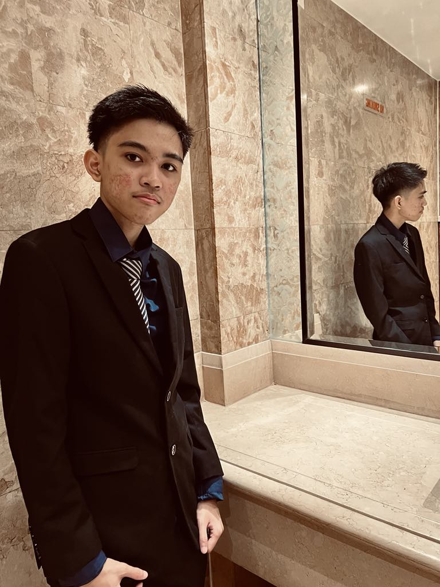
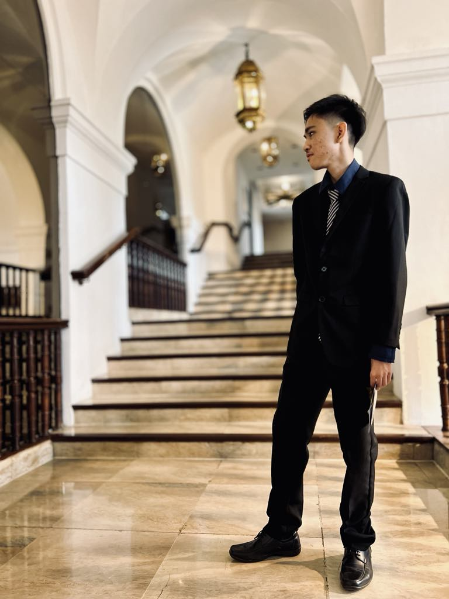

PromenadeLuckily, our school was able to hold a prom before our graduation, as we were still recovering from the pandemic. As it was an exceedingly rare event, I cherished this moment, knowing that it would be a long time before I see it again. This event was held in Manila Hotel, which meant that this was my 1st time visiting. |